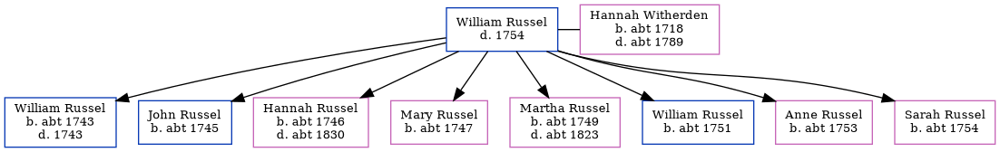

Hannah Russel (née Witherden) c1718 - c1789
[ Home ] | [ Calendar ] | [ Surnames Index ] | [ Census Index ] | [ Family History ]The child of Isaac Witherden and Hannah Kirby, Hannah Witherden, the six times great-aunt of Nigel Horne, was born c. 1718, was baptized in St Peters, Thanet, Kent, England on Jun 3, 1718 and also married William Russel (with whom she had 8 children: William, John, Hannah, Mary, Martha, William, Anne and Sarah) there on Sep 27, 1742 (KFHS CD29).
She died c. 17891 and was buried in St Peters on Feb 26, 1789 (Aged 70KFHS CD29)1.
Parents
- Isaac was born c. 1687
- Hannah was born c. 1689
Children
- William was born c. 1743
- John was born c. 1745
- Hannah was born c. 1746
- Mary was born c. 1747
- Martha was born c. 1749
- William was born c. 1751
- Anne was born c. 1753
- Sarah was born c. 1754
Citations
- Kent, England, Tyler Index to Parish Registers, 1538-1874 Online publication - Provo, UT, USA: Ancestry.com Operations, Inc., 2010. This collection was indexed by Ancestry World Archives Project contributors.Original data - Frank Watt Tyler. The Tyler Collection. Canterbury, Kent, England: The Institute of Herald
Family Tree
Generated by ged2site. Last updated on Jun 11, 2024